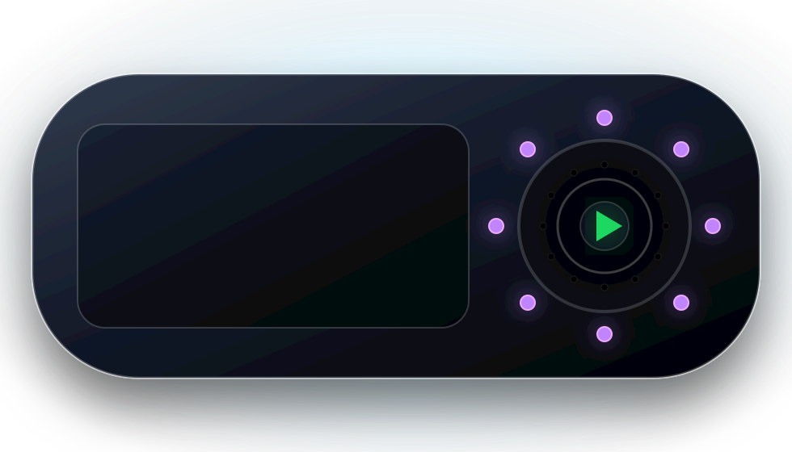

macOS appVoor vaste bediening op je Mac: zoeken, starten en beheren zonder Home Assistant te openen.
Desktop
Pak het device uit, koppel het met Home Assistant en vraag met één druk op de knop om de muziek die je wilt horen. DJConnect start de muziek en geeft een korte DJ-reactie terug.
Download de firmware, flash je ondersteunde ESP32-device en koppel daarna met Home Assistant.
Gebruik DJConnect als desktopbediening, mobiele afstandsbediening of compact ESP32-device.

DJConnect is ontworpen als een productervaring voor Home Assistant. Download de firmware, flash je ondersteunde device en koppel daarna de Home Assistant integration.
Download de DJConnect firmware en flash je ondersteunde ESP32-device voordat je gaat pairen.
Home Assistant regelt pairing, updates, voice verwerking en muziekbediening.
Druk op de knop, spreek je verzoek in en DJConnect helpt je muziek starten.
Start handsfree met "Okay Nabu" wanneer je Home Assistant voice setup dit ondersteunt.
Je krijgt een korte gesproken DJ-reactie terug op het device, afgestemd op je verzoek en muziek.
Kies je muziekuitvoer, bedien playback en ververs Up Next direct vanuit de DJConnect entities.
Even geen muziek kiezen? De firmware bevat ook kleine games zoals Pong, Asteroids en Fly op het device.
DJConnect richt zich op compacte ESP32-S3 devices met display, audio en lokale bediening.
Compacte ESP32-S3 formfactor met display en fysieke bediening. Geschikt voor een dedicated DJConnect device.
Espressif ESP-BOX hardware met display en audio, bruikbaar als referentieplatform voor voice-first DJConnect clients.
Gebruik de firmware-repo voor releases, broncode en flash-instructies voor ondersteunde embedded devices.
Je hoeft dit niet te onthouden, maar het idee is simpel: het device luistert lokaal, Home Assistant doet het slimme werk.
Gebruik de middelste knop.
Vraag via push-to-talk of wake word "Okay Nabu" om een artiest, album, playlist of sfeer.
Herkent je stem en stuurt muziek aan.
Playback loopt via je gekozen muziekapparaat.
DJConnect toont en spreekt een korte DJ-reactie.
Setup is bedoeld als: integration installeren, Spotify autoriseren, device pairen, klaar.
Voeg de DJConnect custom integration toe in HACS en restart Home Assistant.
Ga naar Settings → Devices & services → Add integration → DJConnect.
Log in met je Spotify Premium-account wanneer de setup daarom vraagt.
Voer de code in die op het DJConnect device verschijnt.
Druk op de middelste knop en zeg bijvoorbeeld: “Speel het nieuwste album van Pearl Jam”.
Dit heb je nodig voor een soepele out-of-the-box ervaring.
Nodig om muziek te kunnen starten en bedienen.
Een werkende Home Assistant installatie met HACS.
Home Assistant moet spraak kunnen herkennen en antwoorden kunnen maken.
Het device gebruikt WiFi. Zorg voor bereik op de plek waar je muziek wilt bedienen.
Maakt Spotify autorisatie het makkelijkst.
Helpt Home Assistant het device automatisch te vinden.
Handig om WiFi naar het device te sturen tijdens setup.
Muziek speelt op je Spotify/huismuziekapparaat, niet op de kleine DJConnect speaker.
Na HACS updates is een Home Assistant restart meestal nodig.
Gekoppelde devices kunnen firmware updates via HA ontvangen.
Tokens en wachtwoorden worden niet bewust gelogd en diagnostics redacteren secrets.
DJConnect gebruikt de voice setup die je in Home Assistant configureert, inclusief wake word detectie met "Okay Nabu" waar beschikbaar.
Het device krijgt geen Spotify wachtwoorden of refresh tokens. Die blijven in Home Assistant.
DJConnect geeft korte antwoorden op het scherm en via de eigen speaker.
Live opgehaald uit GitHub en automatisch geformatteerd voor de embedded-device pagina.
Korte antwoorden op de vragen die je waarschijnlijk als eerste hebt.
Ja. Download de DJConnect firmware, flash je ondersteunde ESP32-device en gebruik daarna Home Assistant voor pairing en updates.
Nee. DJ aankondigingen spelen op de speaker/display van het DJConnect device.
Ja, zolang Spotify in Home Assistant goed geautoriseerd is.
Installeer de integration, flash je device, pair met Home Assistant en laat DJConnect de rest doen.